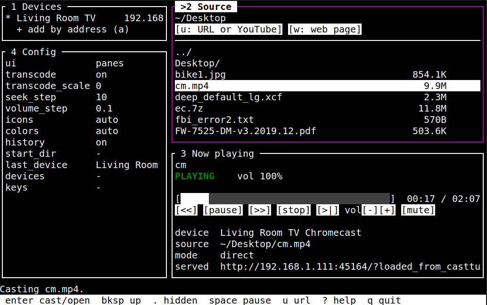

The living-room remote, in a terminal.
casttui finds your Chromecast and plays local files, links, YouTube and whole web pages on it, with live progress and one key per action. In any terminal, over ssh, or on a bare console.
Install
Debian, Ubuntu and their derivatives
sudo curl -fsSLo /usr/share/keyrings/tetronos-archive-keyring.gpg https://tetronos.github.io/apt/tetronos-archive-keyring.gpg
sudo curl -fsSLo /etc/apt/sources.list.d/tetronos.sources https://tetronos.github.io/apt/tetronos.sources
sudo apt update && sudo apt install casttuiThen run casttui. Other ways: install.

Why
Casting usually means a phone app or a desktop browser. casttui needs a terminal on the same network as the TV.
Video, audio and pictures from this computer, served to the device by a built-in HTTP server.
Paste a direct media URL, a YouTube link or any site yt-dlp knows. Or show a whole web page on the TV.
A file the Chromecast can not decode is transcoded live with ffmpeg, as browsers and VLC do.
Plain ASCII and low colour on a bare Linux console. Works inside tmux and tetron-wm.
Use
Press a number to jump to a pane, tab to move on, z to zoom one. The layout follows the terminal: three columns from 150 wide, two from 80, one pane with a tab strip below that.
Found Chromecasts and saved addresses. a adds one by address, for a device discovery can not see. The last one reconnects at start.
A file browser: enter casts. u takes a URL or YouTube link, w a web page.
Title, state, volume, progress and clickable controls. Shows whether the file plays directly or is transcoded.
Every setting, changed with enter or +/- and saved at once.
What was cast, kept across runs. enter casts it again.
space play / pause h l, arrows seek + - volume m mute s n stop, skip q quit, playback continues Q stop and quit
casttui open the interface casttui ~/Videos/clip.mp4 cast once connected casttui https://youtu.be/ a link works too casttui -d 192.168.1.50 connect, no scan :cast PATH|URL :page URL :connect NAME|IP :set KEY VALUE :scan ? every key
Codecs
casttui plays through the Chromecast's Default Media Receiver. H.264 video with AAC or MP3 audio always works. HEVC, AV1 and others may play as audio only, or not at all.
| transcode = false | transcode = true (default) | |
|---|---|---|
| Supported file | plays directly | plays directly |
| Unsupported file | skipped with a warning | streamed through a live ffmpeg H.264/AAC transcode |
| Seeking | yes | not in a transcoded stream |
| CPU | none | a modern desktop handles 1080p in real time; transcode_scale lowers the load |
The codec check and the transcode need ffmpeg installed. Without it, files are sent as they are.
Install
The commands at the top. apt upgrade keeps it current. Details: tetronos apt.
Download casttui_<version>_all.deb from the latest release, then sudo apt install ./casttui_*.deb. Needs Python 3.11 or newer.
Clone the repository, then uv sync and uv run casttui with uv.
ffmpeg for transcoding, xclip or xsel for middle-click paste into the URL field.Config
The Config pane writes ~/.config/casttui/config.toml and keeps your comments. A bad value falls back to its default; the rest of the file still applies.
transcode = true transcode_scale = 0 # 0 keeps the source height seek_step = 10 # seconds volume_step = 0.1 icons = "auto" # ascii, unicode colors = "auto" # mono, 16, 256 history = true start_dir = "" devices = ["10.0.5.20"] [keys] # rebind any action quit = "x"
CASTTUI_ICONS=ascii|unicode CASTTUI_COLORS=mono|16|256 NO_COLOR=1 TETRON_WM_COLORS set by tetron-wm
| settings | ~/.config/casttui/config.toml (honours XDG_CONFIG_HOME) |
| history | ~/.local/state/casttui/history.jsonl, newest 200; history = false turns it off |
| all options | casttui --help |
sudo apt install casttui
casttui ~/Videos/clip.mp4After adding the tetronos apt repository. Source and releases: github.com/tetronos/casttui